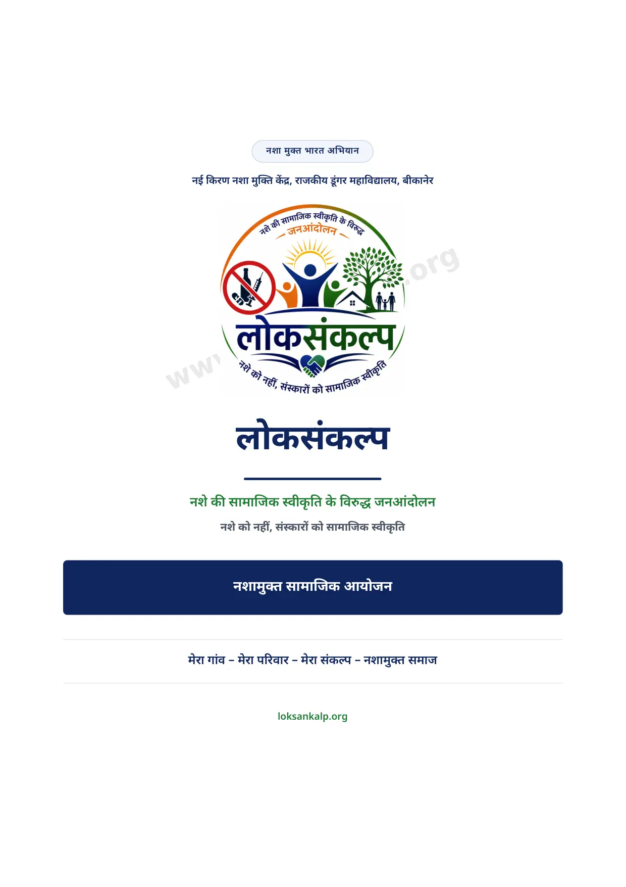
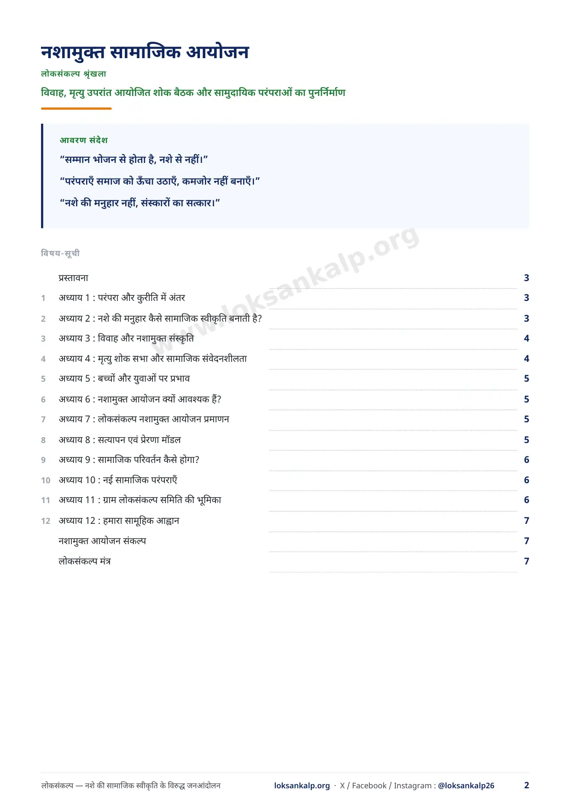
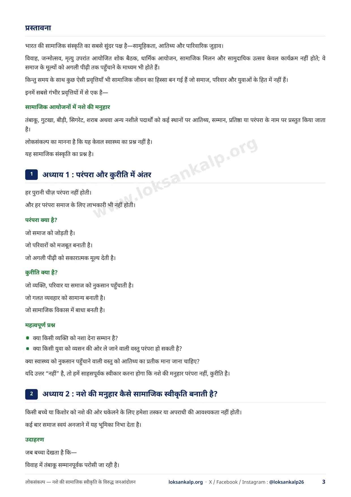
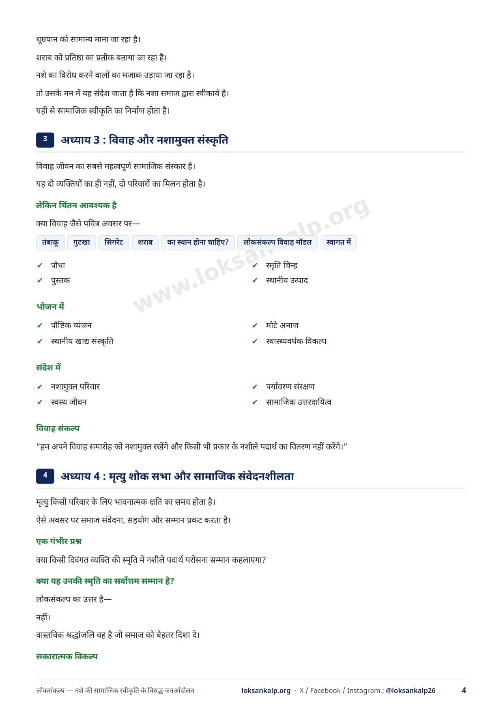
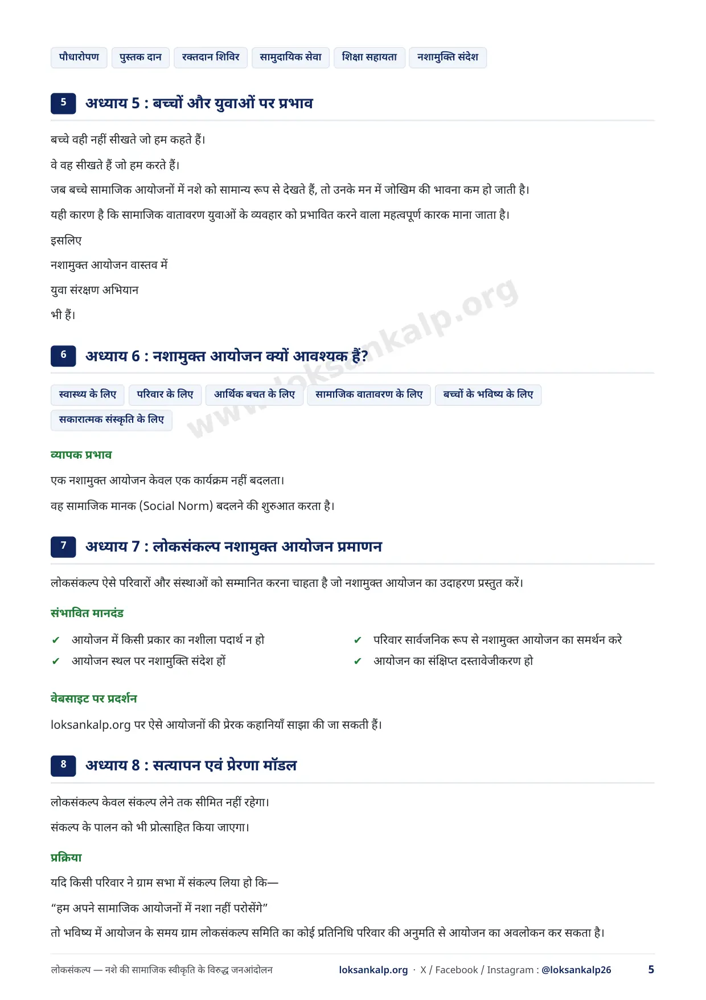
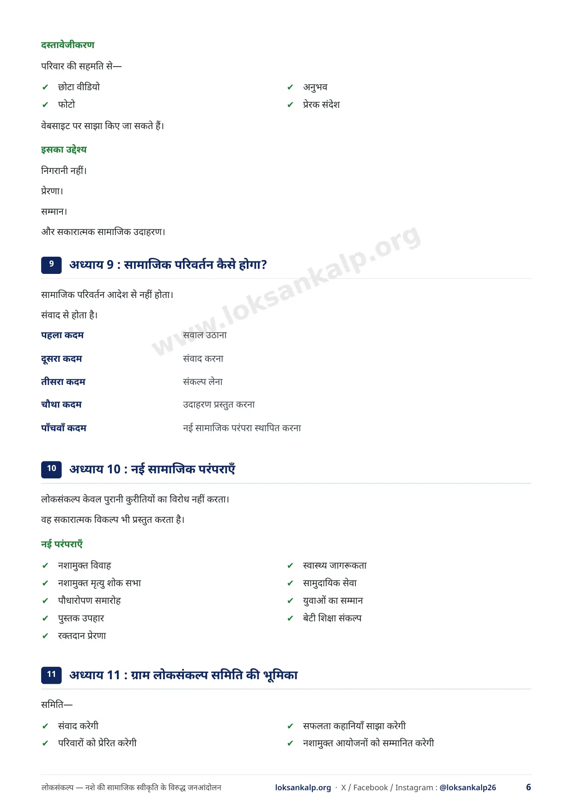
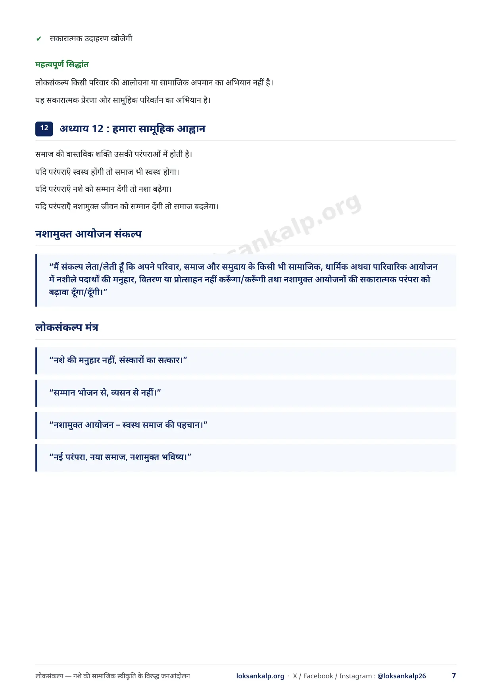
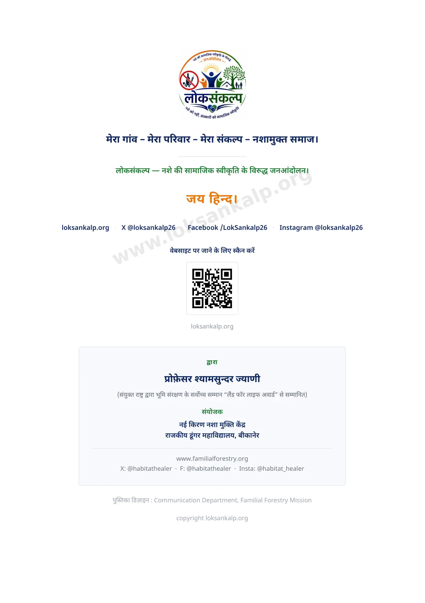

परिवार, समिति एवं आयोजकों के लिए
नशामुक्त सामाजिक आयोजन
विवाह, शोक बैठक और सामुदायिक परंपराओं का पुनर्निर्माण
“सम्मान भोजन से होता है, नशे से नहीं।”
“नशे की मनुहार नहीं, संस्कारों का सत्कार। परंपराएँ समाज को ऊँचा उठाएँ, कमजोर नहीं बनाएँ।”
PDF डाउनलोड करें नई विंडो में खोलें सभी सामग्री
8 पृष्ठ · PDF लगभग 616 KB · छापकर सभा और बैठक में बाँटी जा सकती है।
विषय-सूची
किसी भी अध्याय पर टैप करके सीधे उस पृष्ठ पर पहुँचें।
- प्रस्तावनापृष्ठ 3
- अध्याय 1 : परंपरा और कुरीति में अंतरपृष्ठ 3
- अध्याय 2 : नशे की मनुहार कैसे सामाजिक स्वीकृति बनाती है?पृष्ठ 3
- अध्याय 3 : विवाह और नशामुक्त संस्कृतिपृष्ठ 4
- अध्याय 4 : मृत्यु शोक सभा और सामाजिक संवेदनशीलतापृष्ठ 4
- अध्याय 5 : बच्चों और युवाओं पर प्रभावपृष्ठ 5
- अध्याय 6 : नशामुक्त आयोजन क्यों आवश्यक हैं?पृष्ठ 5
- अध्याय 7 : लोकसंकल्प नशामुक्त आयोजन प्रमाणनपृष्ठ 5
- अध्याय 8 : सत्यापन एवं प्रेरणा मॉडलपृष्ठ 5
- अध्याय 9 : सामाजिक परिवर्तन कैसे होगा?पृष्ठ 6
- अध्याय 10 : नई सामाजिक परंपराएँपृष्ठ 6
- अध्याय 11 : ग्राम लोकसंकल्प समिति की भूमिकापृष्ठ 6
- अध्याय 12 : हमारा सामूहिक आह्वानपृष्ठ 7
- नशामुक्त आयोजन संकल्पपृष्ठ 7
- लोकसंकल्प मंत्रपृष्ठ 7
पुस्तिका पढ़ें








आगे क्या करें
पुस्तिका पढ़ने के बाद अपना संकल्प लें, या अपने गाँव अथवा वार्ड में सभा की तैयारी करें।